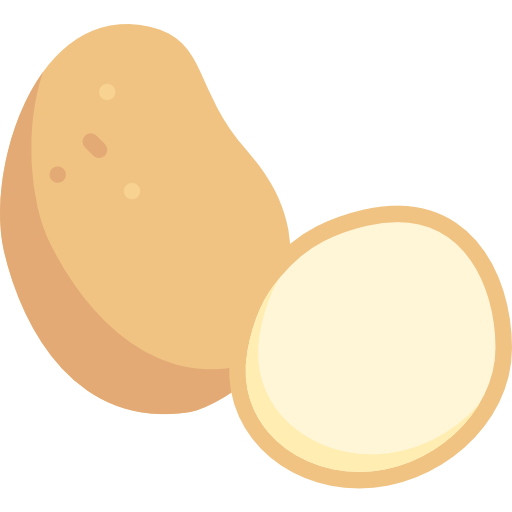

Catalogue de plantes
Tomates
 Gorgées de sucres et de soleil, les tomates cueillies à point sont savoureuses. Très nombreuses, elles s’utilisent en cuisine diversement selon leur qualité : juteuses, charnues, sans pépins, les plus grosses sont idéales à farcir, les petites se laissent croquer à l’apéritif.
Gorgées de sucres et de soleil, les tomates cueillies à point sont savoureuses. Très nombreuses, elles s’utilisent en cuisine diversement selon leur qualité : juteuses, charnues, sans pépins, les plus grosses sont idéales à farcir, les petites se laissent croquer à l’apéritif.
Laitue
 Déjà mentionnée comme salade dans les ouvrages de la Grèce et de la Rome antiques, la laitue cultivée se différencie de la forme sauvage par sa capacité à former une pomme composée de feuilles imbriquées les unes dans les autres, et par son absence d’amertume. Elle est arrivée en France avec la domination romaine et n’a plus quitté nos tables.
Déjà mentionnée comme salade dans les ouvrages de la Grèce et de la Rome antiques, la laitue cultivée se différencie de la forme sauvage par sa capacité à former une pomme composée de feuilles imbriquées les unes dans les autres, et par son absence d’amertume. Elle est arrivée en France avec la domination romaine et n’a plus quitté nos tables.
Carottes
 La carotte est une plante bisannuelle de la famille des apiacées, largement cultivée pour sa racine pivotante charnue, comestible, de couleur généralement orangée, consommée comme légume. La carotte représente après la pomme de terre le principal légume-racine cultivé dans le monde.
La carotte est une plante bisannuelle de la famille des apiacées, largement cultivée pour sa racine pivotante charnue, comestible, de couleur généralement orangée, consommée comme légume. La carotte représente après la pomme de terre le principal légume-racine cultivé dans le monde.
Poireaux
Le poireau est une espèce de plante herbacée vivace largement cultivée comme plante potagère pour ses feuilles consommées comme légumes. Il appartient à la famille des Amaryllidacées. Noms communs: poireau, porreau, poirée, poirette, asperge du pauvre.
Pommes de terre
 La pomme de terre, ou patate, est un tubercule comestible produit par l’espèce Solanum tuberosum, appartenant à la famille des solanacées. Le terme désigne également la plante elle-même, plante herbacée, vivace par ses tubercules mais toujours cultivée comme une culture annuelle.
Courgettes
La courgette est une plante herbacée de la famille des Cucurbitaceae, c'est aussi le fruit comestible de cette plante. La courgette est un légume courant en été, la fleur de courgette est aussi utilisée en cuisine.
Oignons
L'oignon est une espèce de plantes herbacées bisannuelles de la famille des Amaryllidaceae, largement et depuis longtemps cultivée comme plante potagère pour ses bulbes de saveur et d'odeur fortes ou pour ses feuilles. Le terme désigne aussi le bulbe de cette plante récolté comme légume.
Choux
 Issu d’une plante sauvage poussant sur les côtes européennes, le chou a connu tellement de sélections différentes qu’il en existe maintenant des espèces ou variétés adaptées à tous les climats tempérés. C’est une plante robuste qui apprécie les sols profonds, en général frais, à tendance calcaire.
Issu d’une plante sauvage poussant sur les côtes européennes, le chou a connu tellement de sélections différentes qu’il en existe maintenant des espèces ou variétés adaptées à tous les climats tempérés. C’est une plante robuste qui apprécie les sols profonds, en général frais, à tendance calcaire.
Radis
 Le radis, Raphanus sativus est une plante potagère bisannuelle, de la famille des Brassicacées, cultivée pour son hypocotyle charnu, souvent consommé cru, comme légume. Le terme désigne aussi le légume.
Le radis, Raphanus sativus est une plante potagère bisannuelle, de la famille des Brassicacées, cultivée pour son hypocotyle charnu, souvent consommé cru, comme légume. Le terme désigne aussi le légume.
Concombres
Le concombre est une plante potagère herbacée, rampante, de la même famille que la calebasse africaine, le melon ou la courge. C'est botaniquement un fruit qui est consommé comme un légume.
Poivrons
 Découverte aux Amériques et ramenée par les conquistadors sur le vieux continent, cette solanacée, à l’inverse des tomates et pommes de terre, connut rapidement un immense succès. Quel plaisir de pouvoir enfin produire facilement un succédané de poivre, épice tellement recherchée à l’époque.
Découverte aux Amériques et ramenée par les conquistadors sur le vieux continent, cette solanacée, à l’inverse des tomates et pommes de terre, connut rapidement un immense succès. Quel plaisir de pouvoir enfin produire facilement un succédané de poivre, épice tellement recherchée à l’époque.
Petits pois
Les petits pois, pois de jardins, ou pois potagers sont les jeunes graines vertes de variétés cultivées du pois, récoltées après leur développement dans les gousses et avant leur maturité. Lorsque ces graines sont récoltées à leur maturité, elles sont appelées pois cassés.
Céleri
Descendant d’une plante appelée “ache des marais”, originaire de Méditerranée, le céleri n’était pas considéré comme un légume, mais comme une plante médicinale, jusqu’à la Renaissance. Aujourd’hui, on mange ses feuilles, sa racine, ses graines...
Aubergines
L’aubergine est une espèce de plantes dicotylédones de la famille des Solanaceae, originaire d'Asie. Ce sont des plantes herbacées annuelles, largement cultivées pour leurs fruits comestibles comme plantes potagères ou maraîchères. L'espèce a été domestiquée en Asie depuis l'époque préhistorique.
Epinards
 L'épinard est une plante potagère, annuelle ou bisannuelle, de la famille des Chenopodiaceae ou des Amaranthaceae selon les classifications. Originaire de l'Iran, il est aujourd'hui cultivé dans toutes les régions tempérées pour ses qualités nutritionnelles.
L'épinard est une plante potagère, annuelle ou bisannuelle, de la famille des Chenopodiaceae ou des Amaranthaceae selon les classifications. Originaire de l'Iran, il est aujourd'hui cultivé dans toutes les régions tempérées pour ses qualités nutritionnelles.
Betteraves
Arborant un joli feuillage veiné de rouge, la betterave décore le potager quand la plupart des autres légumes ont été récoltés. Bien conservée, elle offre sa saveur douce jusqu’à la fin de l’hiver.